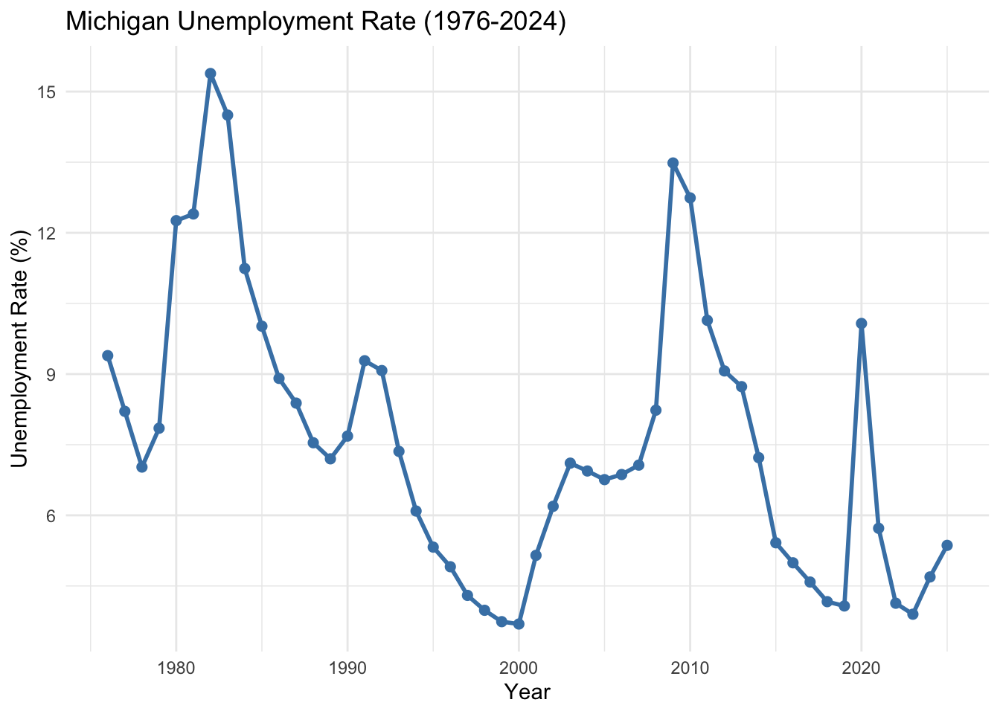
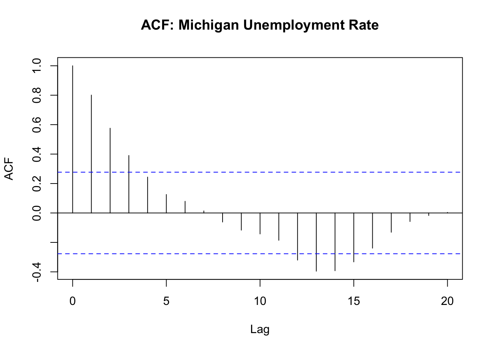
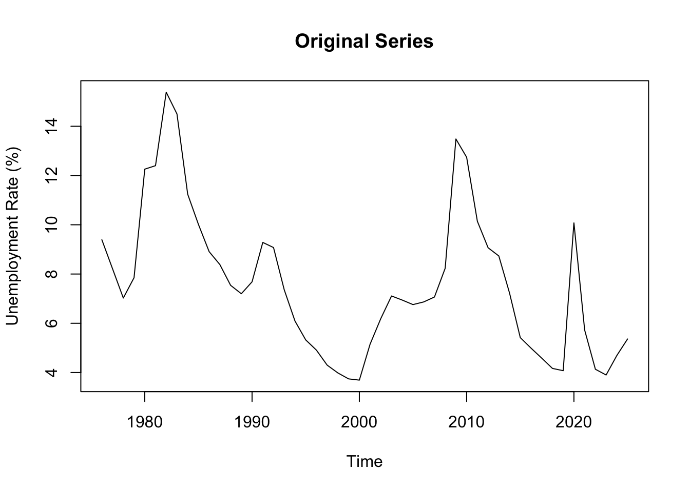
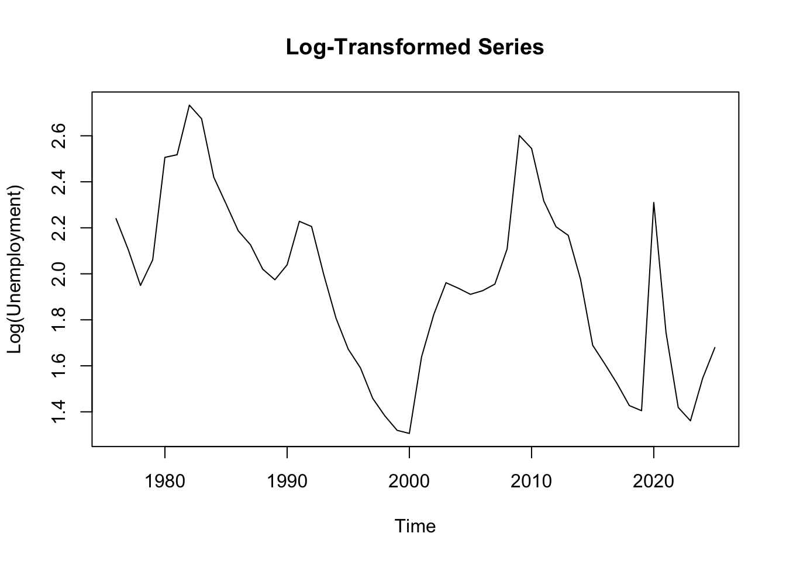
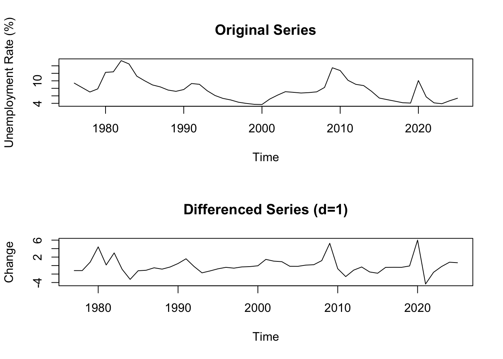
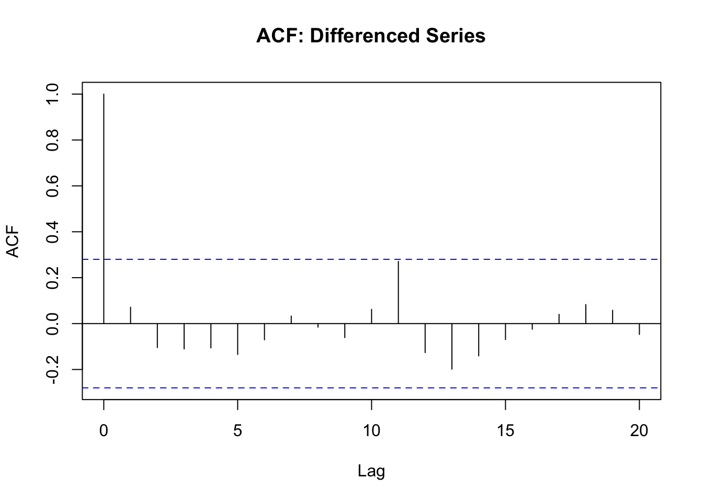
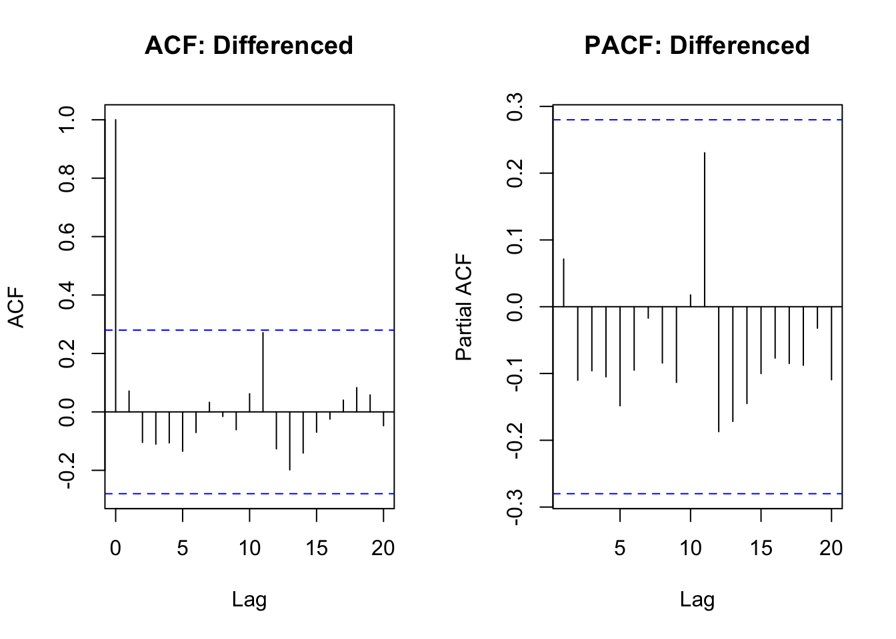
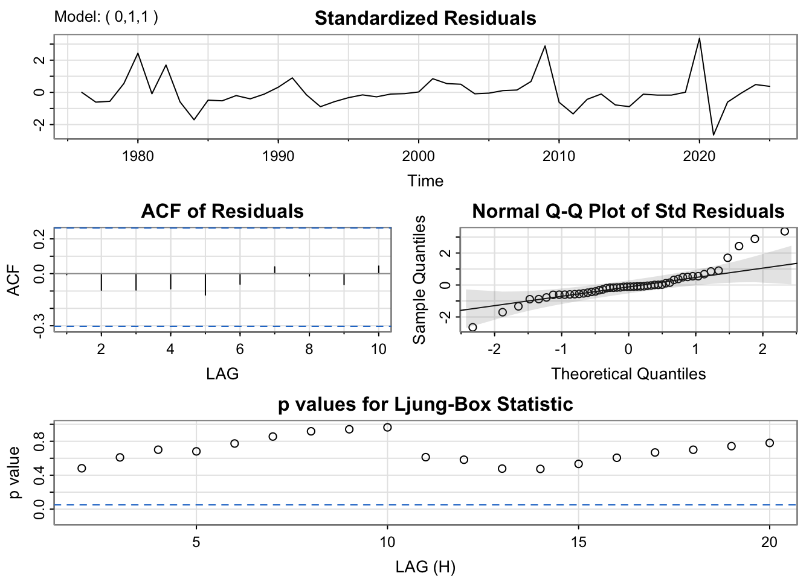
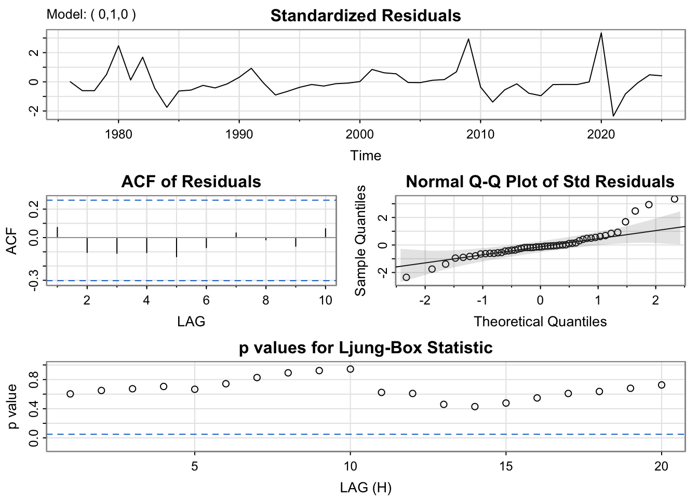

library(tidyverse)
library(forecast)
library(tseries)
library(astsa)
library(plotly)
library(here)
options(scipen = 999)unemployment_df <- read_csv(here("data", "processed-data", "unemployment_df.csv"))New names:
Rows: 50 Columns: 8
── Column specification
──────────────────────────────────────────────────────── Delimiter: "," dbl
(8): ...1, year, Florida, Ohio, Utah, Michigan, New York, California
ℹ Use `spec()` to retrieve the full column specification for this data. ℹ
Specify the column types or set `show_col_types = FALSE` to quiet this message.
• `` -> `...1`mi_data <- unemployment_df %>%
select(year, Michigan) %>%
rename(unemployment_rate = Michigan) %>%
arrange(year)
head(mi_data)# A tibble: 6 × 2
year unemployment_rate
<dbl> <dbl>
1 1976 9.39
2 1977 8.21
3 1978 7.02
4 1979 7.85
5 1980 12.3
6 1981 12.4 tail(mi_data)# A tibble: 6 × 2
year unemployment_rate
<dbl> <dbl>
1 2020 10.1
2 2021 5.72
3 2022 4.13
4 2023 3.9
5 2024 4.69
6 2025 5.36summary(mi_data) year unemployment_rate
Min. :1976 Min. : 3.692
1st Qu.:1988 1st Qu.: 5.194
Median :2000 Median : 7.154
Mean :2000 Mean : 7.572
3rd Qu.:2013 3rd Qu.: 9.073
Max. :2025 Max. :15.383 ggplot(mi_data, aes(x = year, y = unemployment_rate)) +
geom_line(color = "steelblue", size = 1) +
geom_point(color = "steelblue", size = 2) +
labs(title = "Michigan Unemployment Rate (1976-2024)",
x = "Year", y = "Unemployment Rate (%)") +
theme_minimal()Warning: Using `size` aesthetic for lines was deprecated in ggplot2 3.4.0.
ℹ Please use `linewidth` instead.
plot_ly(mi_data, x = ~year, y = ~unemployment_rate,
type = 'scatter', mode = 'lines+markers',
line = list(color = 'steelblue', width = 2),
marker = list(size = 6, color = 'steelblue')) %>%
add_segments(x = 1982, xend = 1982, y = 0, yend = 15,
line = list(color = "red", dash = "dash"),
showlegend = FALSE) %>%
add_segments(x = 1990, xend = 1990, y = 0, yend = 15,
line = list(color = "red", dash = "dash"),
showlegend = FALSE) %>%
add_segments(x = 2008, xend = 2008, y = 0, yend = 15,
line = list(color = "red", dash = "dash"),
showlegend = FALSE) %>%
add_segments(x = 2020, xend = 2020, y = 0, yend = 15,
line = list(color = "red", dash = "dash"),
showlegend = FALSE) %>%
layout(title = "Michigan Unemployment with Economic Events",
xaxis = list(title = "Year"),
yaxis = list(title = "Unemployment Rate (%)"))A marker object has been specified, but markers is not in the mode
Adding markers to the mode...
A marker object has been specified, but markers is not in the mode
Adding markers to the mode...
A marker object has been specified, but markers is not in the mode
Adding markers to the mode...
A marker object has been specified, but markers is not in the mode
Adding markers to the mode...mi_ts <- ts(mi_data$unemployment_rate, start = 1976, frequency = 1)decomp_attempt <- tryCatch({
decompose(mi_ts, type = "additive")
}, error = function(e) {
return(NULL)
})
if(is.null(decomp_attempt)) {
message("Classical decomposition requires frequency > 1. With annual data (frequency=1), decomposition is not applicable. The series shows trend and irregular components but no seasonal pattern.")
} else {
plot(decomp_attempt)
}Classical decomposition requires frequency > 1. With annual data (frequency=1), decomposition is not applicable. The series shows trend and irregular components but no seasonal pattern.lag.plot(mi_ts, lags = 4, do.lines = FALSE,
main = "Lag Plots: Michigan Unemployment")
acf(mi_ts, main = "ACF: Michigan Unemployment Rate", lag.max = 20)
adf_result <- adf.test(mi_ts)
adf_result
Augmented Dickey-Fuller Test
data: mi_ts
Dickey-Fuller = -2.6905, Lag order = 3, p-value = 0.2973
alternative hypothesis: stationaryplot(mi_ts, main = "Original Series", ylab = "Unemployment Rate (%)")
sd_original <- sd(mi_ts)
mi_ts_log <- log(mi_ts)
plot(mi_ts_log, main = "Log-Transformed Series", ylab = "Log(Unemployment)")
sd_log <- sd(mi_ts_log)mi_diff <- diff(mi_ts, differences = 1)
par(mfrow = c(2, 1))
plot(mi_ts, main = "Original Series", ylab = "Unemployment Rate (%)")
plot(mi_diff, main = "Differenced Series (d=1)", ylab = "Change")
adf_diff <- adf.test(mi_diff)
adf_diff
Augmented Dickey-Fuller Test
data: mi_diff
Dickey-Fuller = -3.9506, Lag order = 3, p-value = 0.01916
alternative hypothesis: stationaryacf(mi_diff, main = "ACF: Differenced Series", lag.max = 20)
par(mfrow = c(1, 2))
acf(mi_diff, main = "ACF: Differenced", lag.max = 20)
pacf(mi_diff, main = "PACF: Differenced", lag.max = 20)
model1 <- Arima(mi_ts, order = c(0, 1, 1))
model2 <- Arima(mi_ts, order = c(1, 1, 0))
model3 <- Arima(mi_ts, order = c(1, 1, 1))
model4 <- Arima(mi_ts, order = c(2, 1, 0))
comparison <- data.frame(
Model = c("ARIMA(0,1,1)", "ARIMA(1,1,0)", "ARIMA(1,1,1)", "ARIMA(2,1,0)"),
AIC = c(AIC(model1), AIC(model2), AIC(model3), AIC(model4)),
BIC = c(BIC(model1), BIC(model2), BIC(model3), BIC(model4))
)
knitr::kable(comparison, caption = "Manual Model Comparison")| Model | AIC | BIC |
|---|---|---|
| ARIMA(0,1,1) | 201.3489 | 205.1325 |
| ARIMA(1,1,0) | 201.4102 | 205.1938 |
| ARIMA(1,1,1) | 203.2215 | 208.8970 |
| ARIMA(2,1,0) | 202.8486 | 208.5241 |
auto_model <- auto.arima(mi_ts, seasonal = FALSE)
summary(auto_model)Series: mi_ts
ARIMA(0,1,0)
sigma^2 = 3.308: log likelihood = -98.84
AIC=199.67 AICc=199.76 BIC=201.56
Training set error measures:
ME RMSE MAE MPE MAPE MASE
Training set -0.0803955 1.800389 1.202604 -3.478451 15.28331 0.9801531
ACF1
Training set 0.07077338sarima(mi_ts, p=0, d=1, q=1)initial value 0.597081
iter 2 value 0.594005
iter 3 value 0.593885
iter 4 value 0.593885
iter 5 value 0.593885
iter 5 value 0.593885
iter 5 value 0.593885
final value 0.593885
converged
initial value 0.593941
iter 2 value 0.593940
iter 3 value 0.593939
iter 3 value 0.593939
iter 3 value 0.593939
final value 0.593939
converged
<><><><><><><><><><><><><><>
Coefficients:
Estimate SE t.value p.value
ma1 0.0868 0.1540 0.5634 0.5758
constant -0.0828 0.2807 -0.2948 0.7694
sigma^2 estimated as 3.279611 on 47 degrees of freedom
AIC = 4.148205 AICc = 4.153529 BIC = 4.264031

# Use whatever auto.arima selected - check the output above first
auto_order <- arimaorder(auto_model)
sarima(mi_ts, p=auto_order[1], d=auto_order[2], q=auto_order[3])initial value 0.597081
iter 1 value 0.597081
final value 0.597081
converged
initial value 0.597081
iter 1 value 0.597081
final value 0.597081
converged
<><><><><><><><><><><><><><>
Coefficients:
Estimate SE t.value p.value
constant -0.0822 0.2595 -0.3168 0.7528
sigma^2 estimated as 3.30079 on 48 degrees of freedom
AIC = 4.113672 AICc = 4.115408 BIC = 4.190889

train <- window(mi_ts, end = 2020)
test <- window(mi_ts, start = 2021)
arima_fit <- auto.arima(train, seasonal = FALSE)
naive_fit <- naive(train, h = length(test))
mean_fit <- meanf(train, h = length(test))
arima_forecast <- forecast(arima_fit, h = length(test))
arima_mae <- mean(abs(test - arima_forecast$mean))
naive_mae <- mean(abs(test - naive_fit$mean))
mean_mae <- mean(abs(test - mean_fit$mean))
arima_mse <- mean((test - arima_forecast$mean)^2)
naive_mse <- mean((test - naive_fit$mean)^2)
mean_mse <- mean((test - mean_fit$mean)^2)
benchmark_comparison <- data.frame(
Model = c("ARIMA", "Naive", "Mean"),
MAE = c(arima_mae, naive_mae, mean_mae),
MSE = c(arima_mse, naive_mse, mean_mse)
)
knitr::kable(benchmark_comparison, caption = "Benchmark Comparison", digits = 3)| Model | MAE | MSE |
|---|---|---|
| ARIMA | 5.312 | 28.709 |
| Naive | 5.312 | 28.709 |
| Mean | 3.121 | 10.228 |
final_model <- auto.arima(mi_ts, seasonal = FALSE)
forecast_vals <- forecast(final_model, h = 2)
forecast_vals Point Forecast Lo 80 Hi 80 Lo 95 Hi 95
2026 5.3625 3.031783 7.693217 1.7979763 8.927024
2027 5.3625 2.066369 8.658631 0.3215022 10.403498forecast_df <- data.frame(
year = c(time(mi_ts), 2025, 2026),
actual = c(as.numeric(mi_ts), rep(NA, 2)),
forecast = c(rep(NA, length(mi_ts)), as.numeric(forecast_vals$mean)),
lower = c(rep(NA, length(mi_ts)), as.numeric(forecast_vals$lower[,2])),
upper = c(rep(NA, length(mi_ts)), as.numeric(forecast_vals$upper[,2]))
)
plot_ly(forecast_df) %>%
add_lines(x = ~year, y = ~actual, name = "Historical",
line = list(color = "steelblue", width = 2)) %>%
add_lines(x = ~year, y = ~forecast, name = "Forecast",
line = list(color = "red", dash = "dash", width = 2)) %>%
add_ribbons(x = ~year, ymin = ~lower, ymax = ~upper,
name = "95% CI", fillcolor = "rgba(255,0,0,0.2)",
line = list(color = "transparent")) %>%
layout(title = "Michigan Unemployment: Historical and Forecasted",
xaxis = list(title = "Year"),
yaxis = list(title = "Unemployment Rate (%)"))